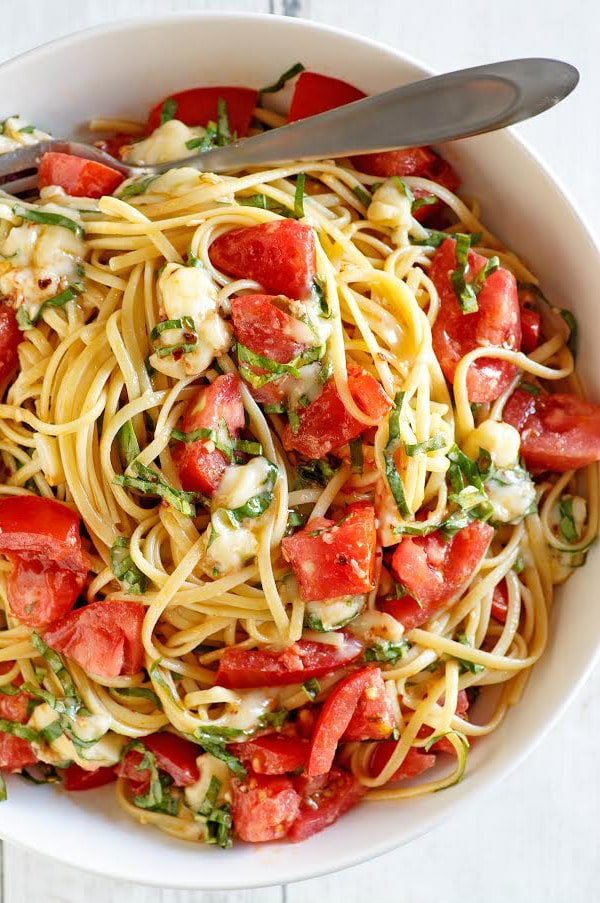

Brie Pasta

Description
Brie pasta made with just four ingredients, freshly made pasta, brie cheese, roma tomatoes, and fresh basil is a simple pasta recipe perfect for summer.
Ingredients
- pasta of your choice
- 1 block of brie cheese
- 2-3 roma tomatoes
- fresh basil leaves
Steps
- Cook pasta of your choice in salted water until al dente. Save a cup of pasta water for later.
- Break brie cheese into pieces. Chop basil leaves and tomatoes.
- Combine all ingredients in a serving bowl large enough to hold the cooked pasta and the mixture.
- Stir gently to combine. If the mixture doesn't combine well, add pasta water.
- Voilà! Your pasta is ready to go. Serve immediately.